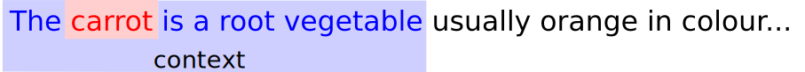
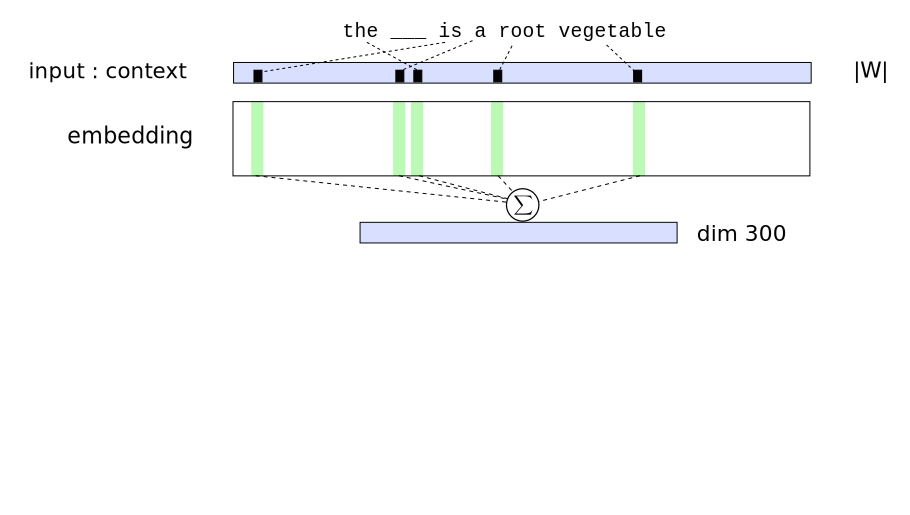

class: center, middle # Natural Language Processing with Deep Learning Charles Ollion - Olivier Grisel .affiliations[    ] --- ### Natural Language Processing intro --- # Outline <br/> ### Word representation: Word2Vec -- ### Recurrent Neural Networks for Language Modelling -- ### Attention Mechanism & Memory --- class: middle, center # Localisation --- # Word representation Vocabulary, ... - Remember: embeddings -- Application for text classification - (example fastText) --- # Transfer Learning with text - similar to image, can we have word representations for transfer learning? - unsupervised learning of word representation --- # Distributional Hypothesis Distributional Hypothesis (Harris, 1954): *“words are characterised by the company that they keep”* Main idea: learning word embeddings by predicting word contexts -- Given a word e.g. “carrot” and any other word $w \in V$ predict probability $P(w|\text{carrot})$ that $w$ occurs in the context of “carrot”. -- Unsupervised / self-supervised: no need of labels. Supervision comes from context. Requires a lot of text data to cover rare words correctly. .footnote.small[ Word2vec mikolov ] --- # Word2Vec: CBoW .center[ <img src="images/word2vec_simple3.svg" style="width: 720px;" /> ] .center[  ] --- # Word2Vec: CBoW .center[  ] .center[ ] --- # Word2Vec: CBoW .center[ <img src="images/word2vec_simple5.svg" style="width: 720px;" /> ] .center[ ] --- # Word2Vec: CBoW .center[ <img src="images/word2vec_simple2.svg" style="width: 720px;" /> ] .center[ ] --- # Word2Vec: Skip Gram -- add details hierarchical softmax VS negative sampling --- # Related methods - GloVe (Socher et al.) insert link - PMI matrix factorization (Levi & Golberg) relation with count based methods --- # Evaluating representations Always difficult to evaluate unsupervised tasks - WordSim (Finkelstein et al.) - SimLex-999 (Hill et al.) - Word Analogies (Mikolov et al.) --- # Word and Embeddings ### for text applications, inputs of Neural Networks are Embeddings #### If you have little training data, or wide vocabulary not covered by data, use pre-trained embeddings (transfer learning) -- #### Otherwise train your embeddings in the task (results in task-specific embeddings) --- class:middle, center # Recurrent Neural Networks for Language Modelling --- # Language Models assign a probability to a sequence of words $p(\text{I like cats}) > p(\text{I table cats})$ $p(\text{I like cats}) > p(\text{like I cats})$ more informative than Bag of Words -- Sequence modelling $$ p(w_n | w_{n-1}, w_{n-2}, ..., w_0) $$ --- # Conditional Language Models Many NLP problems can be expressed as Conditional Language Models: Translation: $$ p(\text{I like cats} | \text{J'aime les chats}) $$ -- Question Answering / dialogue: $$ p(\text{\text{There are four balls.} | \text{How many balls are there ?}, \textit{Context}) $$ --- # Fixed sequence size .center[ <img src="images/fixedsize_mlp.svg" style="width: 400px;" /> ] --- # Recurrent Neural Network .center[ <img src="images/unrolled_rnn.svg" style="width: 400px;" /> ] --- ## Backpropagation through time .center[ <img src="images/unrolled_rnn_backward.svg" style="width: 400px;" /> ] --- # Recurrent Neural Network .center[ <img src="images/rnn_simple.svg" style="width: 200px;" /> ] -- Params: - $W_{in} |V| \times h$ : embedding - $W_h h \times h$ : reccurent layer - $W_{out} h \times K$ : output, can be $|V|$ --- # Recurrent Neural Network $\{w_t\}$ sequence of words ( 1-hot encoded ) include picture $$ x_t = \text{Emb}(w_t) = \mathbf{E} w_t h_t = g(\mathbf{W_h} h_{t-1} + x_t + b_h)\\ y = \text{softmax}( \mathbf{W_o} h_t + b_o ) $$ --- # LSTM $$ x_t = \text{Emb}(w_t) = \mathbf{E} w_t f_t = \sigma(\mathbf{W_h} h_{t-1} + x_t + b_h)\\ h_t = c_t = \sigma y = \text{softmax}( \mathbf{W_o} h_t + b_o ) $$ .footnote.small[ hochreiter schmidhuber ] --- input: sequence of words output: single vector of dimension K, or sequence of vectors of dimension K schema karpathy many-to-one, one-to-many, many-to-many --- class: middle, center # Lab 5: Room F503 and F900 in 15min!